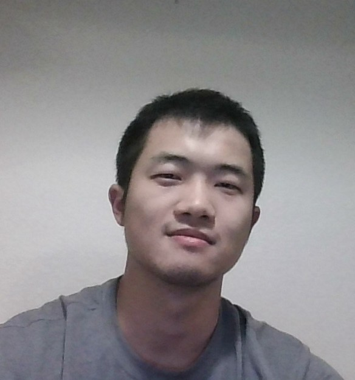

Personal Webpage
Zhengfei Hu |
 |
| Gallery | Arxiv |
I do theoretical physics. I always enjoying doing and learning math, although as a physicist I rarely work with those I'm not using presently (physicists are practical), unless it's fun enough. If things work out, I may end up being a professional physics worker (no matter what that means). I'm not opposed to work on things other than math and physics if I have to. Doing theoretical physics is literally like doing arts. All you need is a little bit of math and a lot of imaginations.
I write Chinese poems (here are some recent ones). I climb on the wall.
I write programs that simplify things for me, or just for fun occasionally. I enjoy working with lisp (guile for TeXmacs and elisp for emacs), julia (HPC lisp), mathematica (remote relative of lisp) and zig (the only nonlisp that I can suffer doing on a daily basis).
I'm use emacs and TeXmacs most of time when I'm with my laptop (besides browsers of course :). I develop for TeXmacs at some of my spare time (mostly on lisp side, I rarely touch its cpp codebase).
I use emacs org files to manage and tangle configurations of emacs itself, TeXmacs, my mailing system (basically msmtp, notmuch and mbsync, with some aid programs) and various lite configurations of my laptop. With emacs I rarely need to recall which file is stored within which directory. Emacs remembers everything for me. I also use a single org file to write weekly summary of my research, an email will composed out of each section and sent to my advisor after I finish it. I also use emacs to create and edit toc for PDF and DJVU files (books).
TeXmacs is a WYSIWYG (what you see is what you get) editor that help you write math-heavy articles. It is developed by Joris van der Hoeven and others since the late 90s and it is NOT an interface to LaTeX. Writing things in TeXmacs is not only more fun, but make you stay focused. Not to mention that, just like emacs, one can easily manipulate TeXmacs via a lisp machine. BTW this website is written in TeXmacs. See official site, Joris' blog, slowpill (Philippe Joyez)'s many builds, user-contributed contents, Max's blog, forum, youtube videos for more info.
I made tm-mathematica (a mathematica plugin for TeXmacs), zdocscan (used to make high-quality vectorized PDF or tiny-sized DJVU out of bad phone-taken photos). I also have a personal julia toolbox since college years that exploits mathematica as a symbolic package. The codes are dirty but quite effective when I need them. I don't have a plan to make it public, but feel free to email me if you wanna try it.